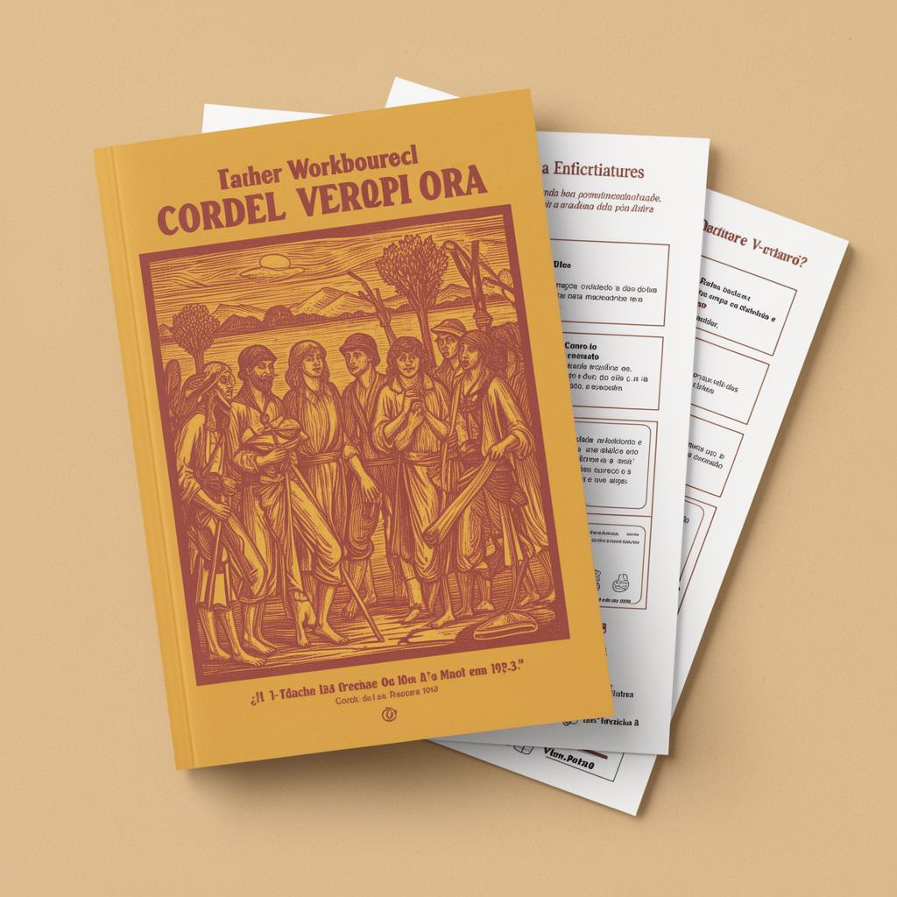
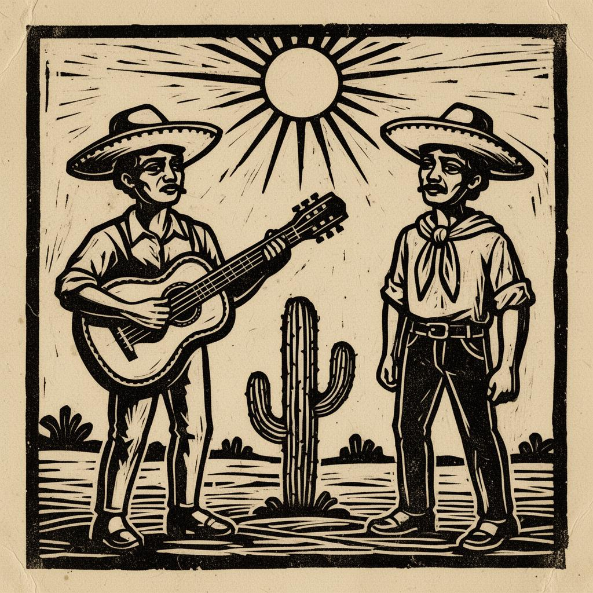
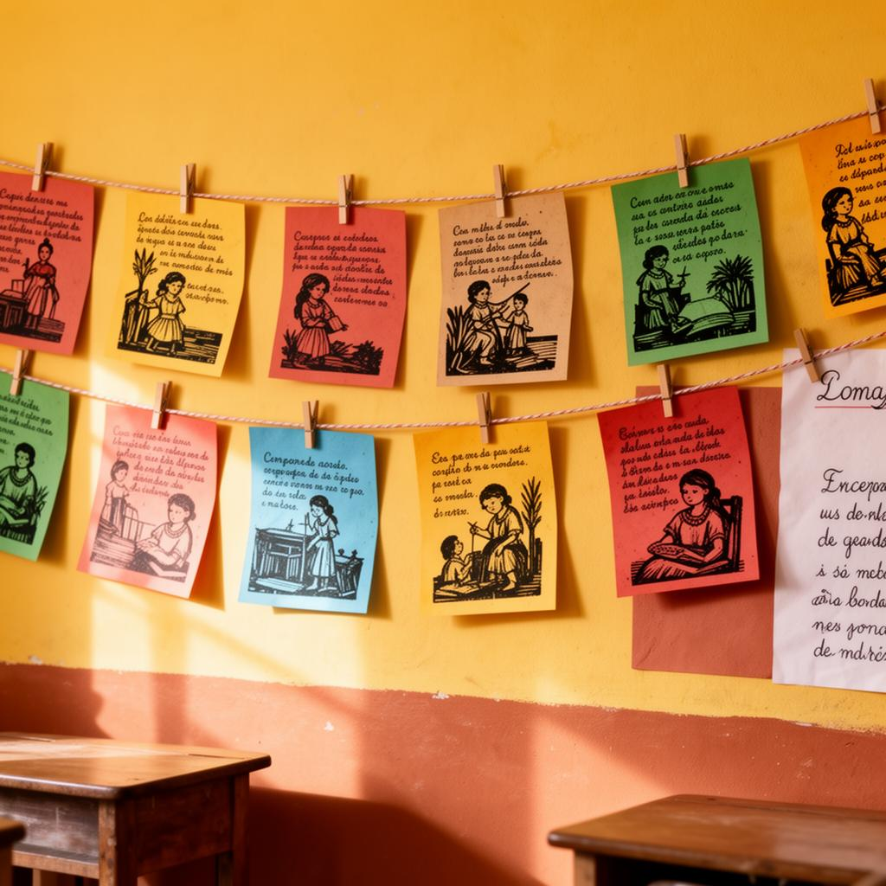

Receba um kit editável em PDF e Word com atividades, produção de cordel, propostas de oralidade, xilogravura e painel coletivo para o Fundamental 1, 2 e Ensino Médio.
Acesso digital enviado por e-mail após a compra.


Criar uma aula completa sobre Literatura de Cordel pode tomar muito tempo. É preciso pesquisar o conteúdo, montar atividades, adaptar para a turma, pensar em produção textual, trabalhar oralidade e ainda criar algo visual para envolver os alunos.
Com o Projeto Cordel Vivo na Escola, você recebe tudo organizado para aplicar com praticidade.
Conduza seus alunos por uma experiência completa: eles conhecem o tema, interpretam, criam seus próprios versos, praticam oralidade e participam de um mural coletivo.
Os alunos descobrem a origem, importância cultural e características da Literatura de Cordel.
Atividades de leitura, compreensão, análise crítica e reflexão sobre os versos.
Modelos prontos e propostas guiadas para os alunos escreverem seus próprios cordéis.
Atividades de oralidade, performance e painel coletivo da turma.
Conteúdo organizado sobre Literatura de Cordel.
Arquivos prontos para personalizar.
Atividades de compreensão e análise.
Os alunos criam seus próprios cordéis.
Guias para facilitar a produção textual.
Conheça os nomes que marcaram a cultura.
Atividades visuais e artesanais.
Como funciona o verso cordelista.
Histórico, cultura nordestina e mais.
Apresentações e leitura expressiva.
Roteiros prontos para aplicar.
Mural 'Cordel na Escola' incluso.
Além da apostila completa, você recebe um painel coletivo para montar um mural cultural com a turma. Ideal para deixar a aula mais visual, participativa e encantadora.

"Meus alunos se encantaram com as atividades e a oficina do cordel! A apostila é prática e rica em conteúdo. Um verdadeiro tesouro cultural!"
"Usei no projeto da escola e foi um sucesso! Meus alunos amaram, cada um fez um cordel e fizemos uma amostra cultural."
"Meus alunos adoraram criar seus próprios cordéis e se envolveram de verdade nas atividades. A proposta foi um sucesso, super recomendo!"
Você realiza a compra de forma simples e segura.
Após o pagamento, o acesso chega no seu e-mail.
Você baixa os arquivos em PDF e Word editável.
Imprime ou edita e usa com seus alunos.
Para criar um projeto completo de Cordel do zero, você teria que pesquisar o conteúdo, montar atividades, criar propostas de leitura e interpretação, preparar produção textual, pensar em oralidade, organizar xilogravura, montar oficina e ainda criar um painel coletivo para a turma.
Com o Projeto Cordel Vivo na Escola, tudo isso já vem pronto, editável e organizado para você baixar, imprimir e aplicar.
Por apenas R$17,90, você economiza tempo e entrega uma experiência cultural completa para seus alunos.
Um projeto completo, editável e pronto para aplicar com seus alunos.
Um projeto completo, editável e pronto para aplicar com seus alunos por menos do que você gastaria montando tudo do zero.
Compra segura· Acesso digital· Recebimento por e-mail